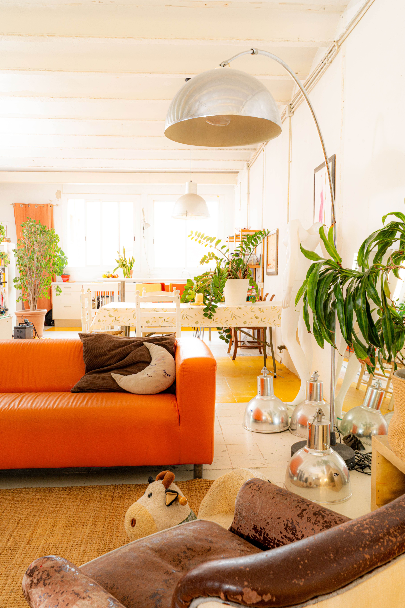
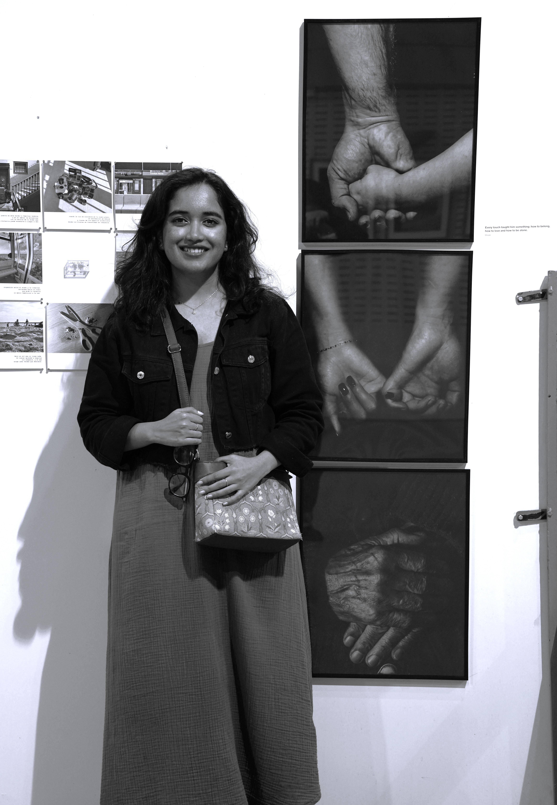
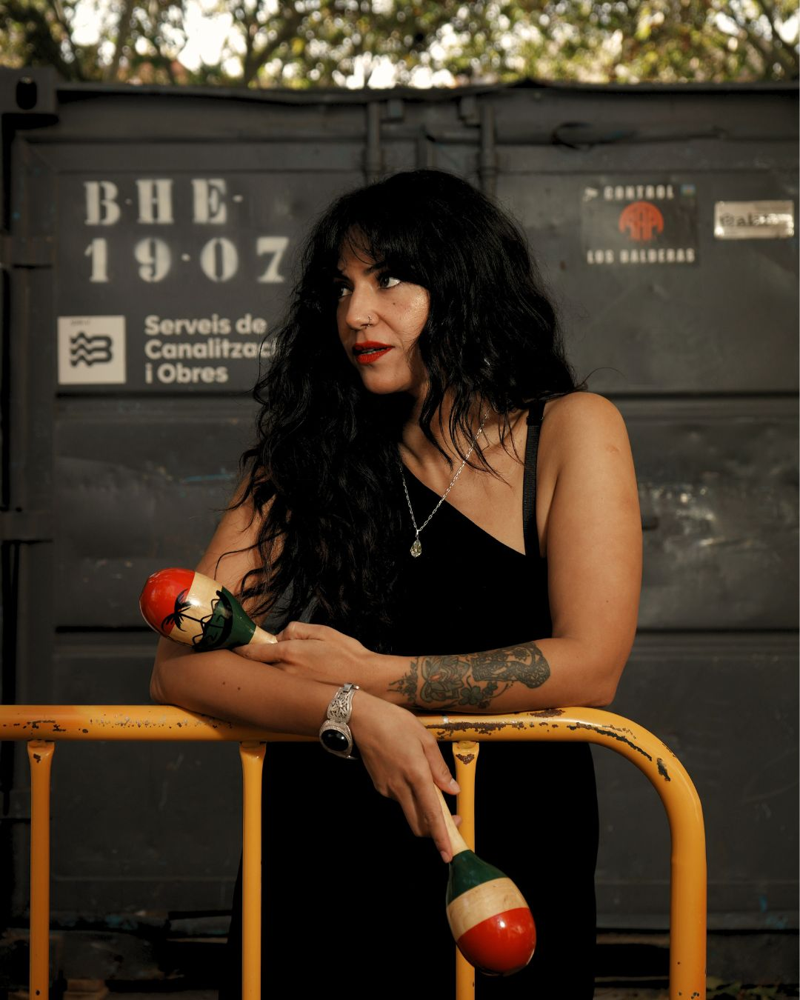
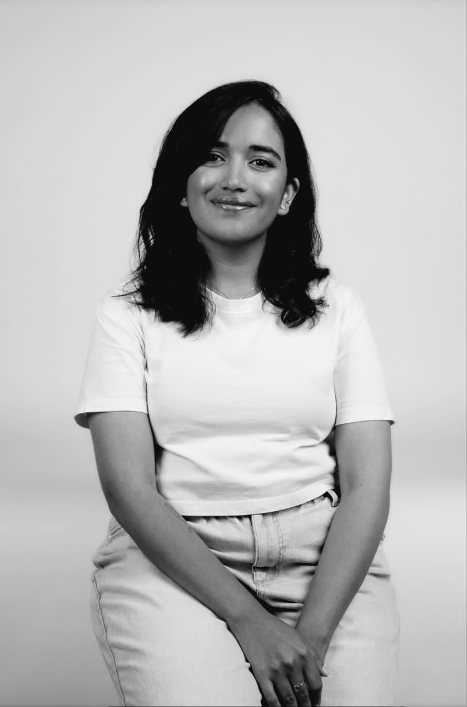

Our professor, Luca, generously allowed us to photograph his loft — a space built using materials collected after different shoots. The loft felt deeply authentic, filled with traces of everyday life. Through this project, I began to understand that imperfections and signs of daily life can give a space warmth, honesty, and character.
Part of the exhibition El Mar, Sempre el Mar, exhibited at Fundació Vila Casas by Master's students from ELISAVA. The atmosphere of the sailing centre constantly changed throughout the day — light, shadows, and movement all transformed the character of the space. This project taught me how observation and persistence can slowly reveal the deeper nature of a place.
One of my first projects in Barcelona, shortly after arriving as a newcomer. Hernan, the doorman of the building, quickly became a familiar presence. The morning greetings slowly created a sense of stability in an unfamiliar place. The aim was to understand Hernan more deeply — but in doing so, it also became a way of building a bond between us.
This project is based on delivery riders in Barcelona. Through conversations with several riders, I learned that the issue is not the job itself, but the way they are treated within it. In daily life, they are often reduced to the large delivery bags they carry, rather than being recognised as individuals. These small details reflect how inclusive or exclusive a society truly is.

My first exhibition at ELISAVA. I chose to explore identity through the stages of a man's life — showing how each phase gradually shapes who he becomes. Rather than presenting identity as something fixed, I approached it as something evolving, formed through time, experience, and transition.
An experimental project exploring the relationship between a mother and daughter, focusing on those vulnerable moments where one simply wants to be held. This project reflects the unspoken affection, the longing for comfort, and the universal human desire for warmth, even when it is not openly expressed.

Barcelona is a city where creativity flows freely, drawing artists from all corners of the world who come to grow, create, and be seen. This ongoing series documents artists living and working here — ballet dancers, musicians, and models, some born in the city, others who migrated in pursuit of their craft. Each portrait explores the dedication behind the art, captured through full-body frames that honour their presence and close details that reveal the texture of their practice.

Shivani
With a foundation in interior design, I developed a strong sensitivity to space, composition, and visual harmony, which gradually led me into the field of photography. My practice is rooted in exploring different genres, unified by a consistent focus on storytelling as the central visual language.
Each project is approached as a process of observing, composing, narrating, and refining, allowing the final image to communicate intention, detail, and meaning with clarity.
I hold a Master's degree in Photography and Design from Elisava, Barcelona, where I further refined both my conceptual approach and technical skills.